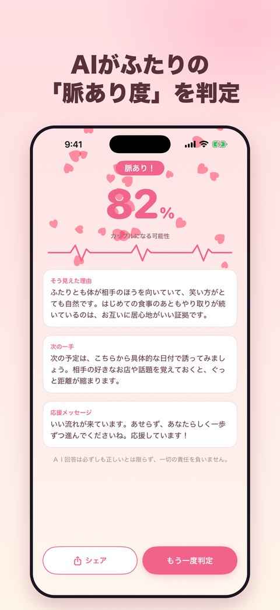
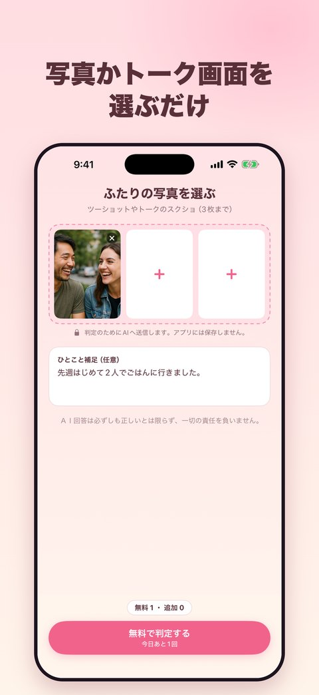
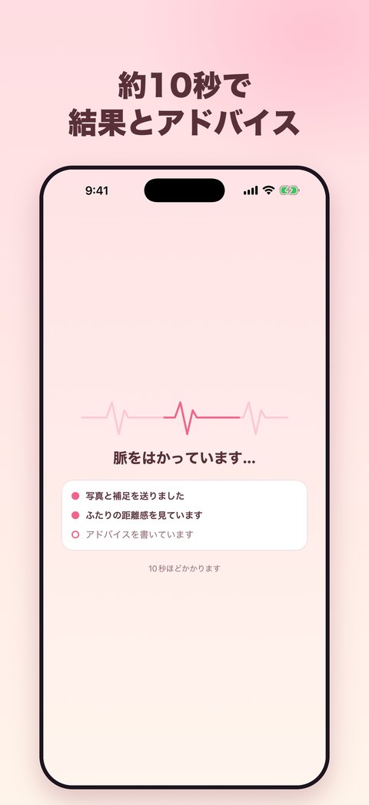
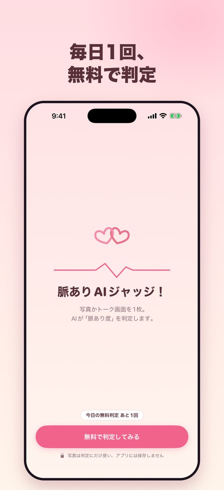

脈ありAIジャッジ
ふたりの写真やトークのスクリーンショットを選ぶだけ。AIが脈あり度を 1〜100% で判定し、そう見えた理由と次の一手をアドバイスします。
- 写真やスクリーンショットは最大3枚まで
- 毎日1回は無料。広告を見ると1回分が追加されます
- 回数が減るのは、判定に成功したときだけ
- 写真は判定のためにAIへ送信し、アプリには保存しません
Love Signal AI
Pick a photo of the two of you or a chat screenshot. AI rates your love signal from 1 to 100%, explains why, and suggests your next move.
- Up to 3 photos or screenshots
- One free analysis every day. Watch an ad to get one more
- An analysis is only counted when it succeeds
- Photos are sent to AI for the analysis and are not stored in the app
恋爱信号AI判定
只需选择两人的合照或聊天截图，AI就会以 1〜100% 判定恋爱信号，并告诉你理由和下一步建议。
- 最多可选择3张照片或截图
- 每天可免费判定1次，观看广告可增加1次
- 只有判定成功时才会扣除次数
- 照片仅为判定发送给AI，不会保存在应用中
戀愛訊號AI判定
只要選擇兩人的合照或聊天截圖，AI就會以 1〜100% 判定戀愛訊號，並告訴你理由和下一步建議。
- 最多可選擇3張照片或截圖
- 每天可免費判定1次，觀看廣告可增加1次
- 只有判定成功時才會扣除次數
- 照片僅為判定傳送給AI，不會保存在應用程式中